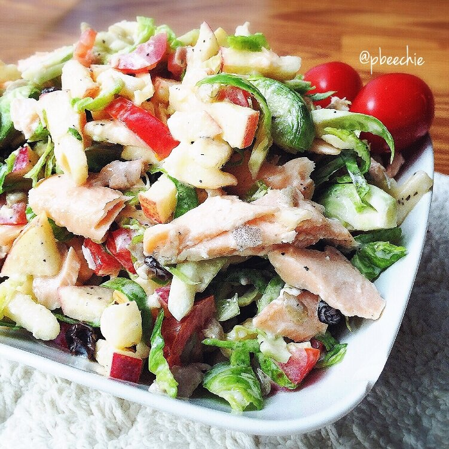
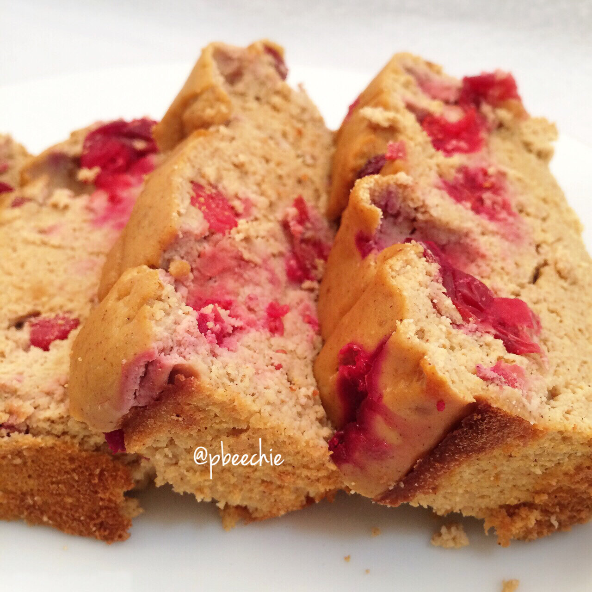
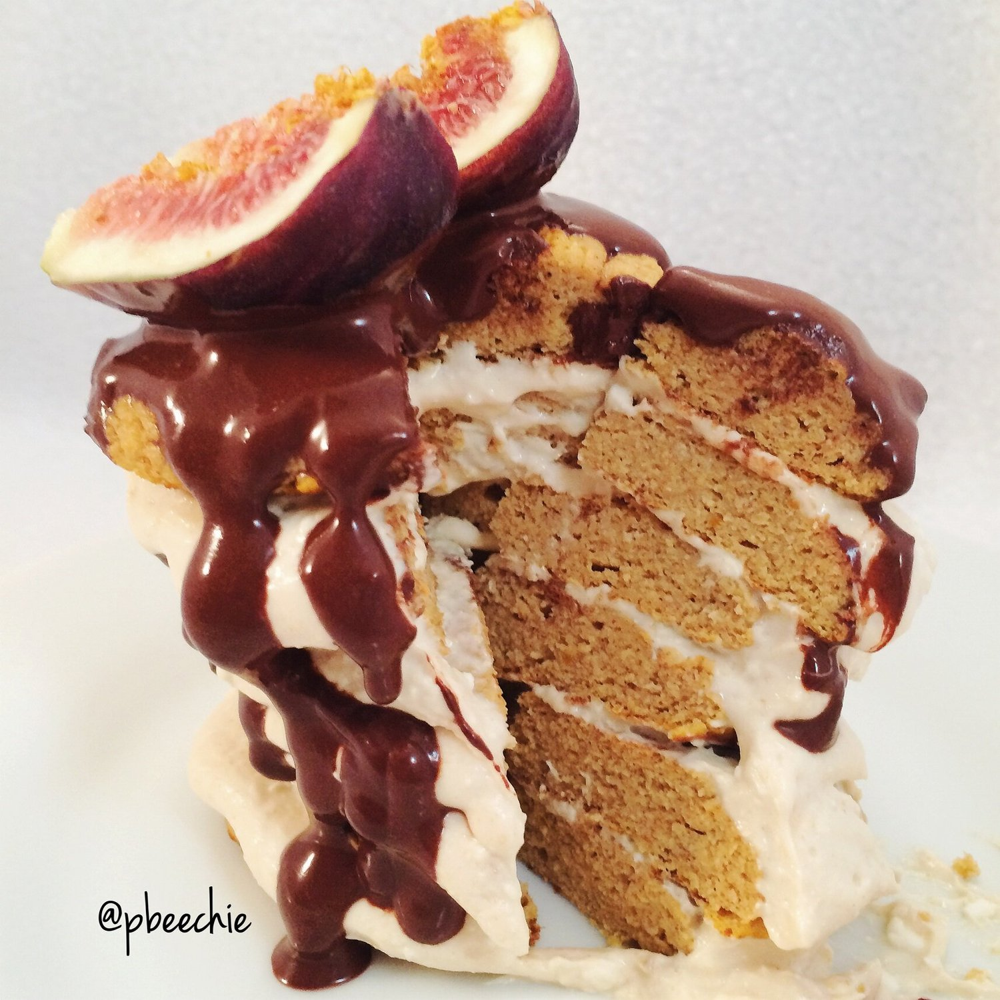
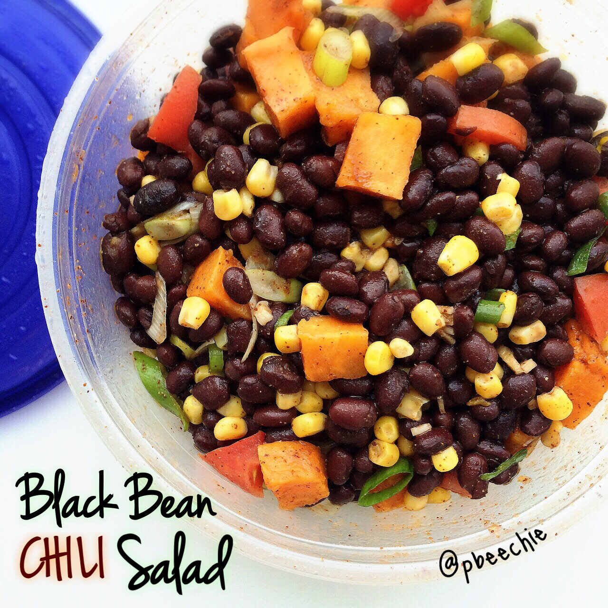
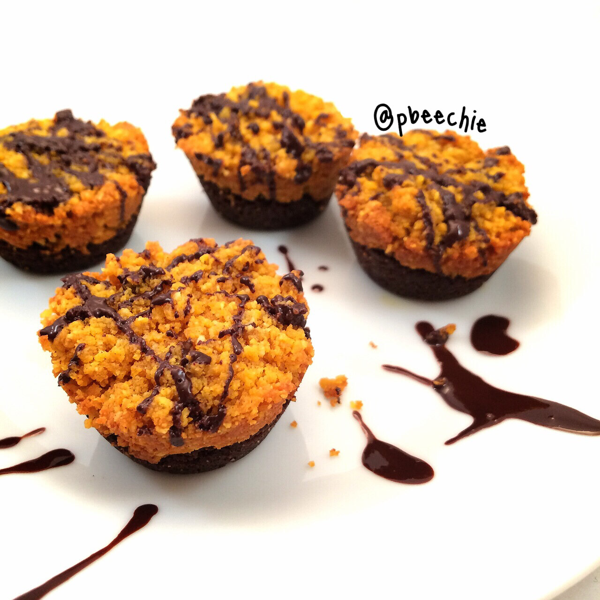
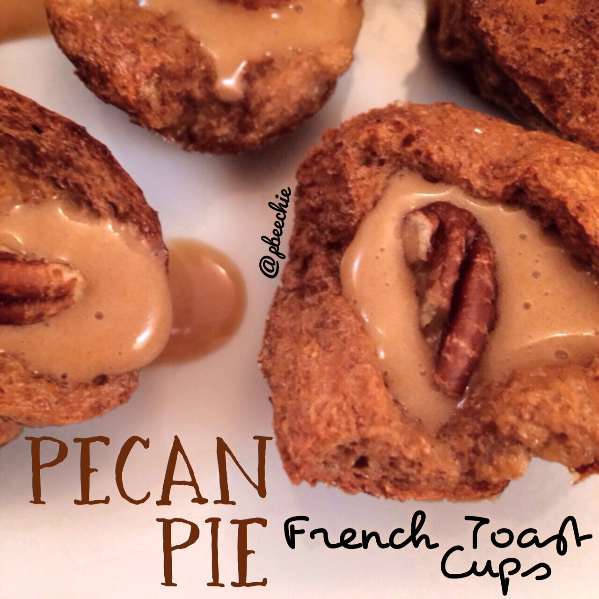

Healthy Thanksgiving Menu!

It's that time of the year again in the U.S... Thanksgiving!! It's coming so fast! While the holiday is full of family and fun, it's mostly filled with food if we're being honest. It can be kind of difficult to choose healthy options at family dinners. A method I like to use, if your family does a potluck-style dinner, is to bring a healthy dish of your own. That way, if the other options people have brought are unhealthy, you know for sure that you can rely on your own dish to eat! It's flawless and I'm sure others will appreciate your contribution to the meal as well :) I've organized recipes from my site that are perfect for the occasion, including breakfast to dessert and everything in between. So if you're needing some ideas, browse through these! Hopefully you can make a healthy thanksgiving menu from it. Enjoy the holiday and time with family :)
BREAKFAST
Pumpkin Spice Pancakes (low carb)
APPETIZER
Cinnamon BBQ Buffalo Meatballs
MAIN DISH
Curry Apple Pie Turkey Meatloaf
Chili Pumpkin Turkey Meatloaf (most popular recipe)
Chipotle Butternut Turkey Chili
ALL THINGS TURKEY
Curry Apple Pie Turkey Meatloaf
Chili Pumpkin Turkey Meatloaf (most popular recipe)
SIDES
Black Bean Salad with a Chili Dressing
Cinnamon Raisin Pumpkin Biscuits
DESSERT
Chocolate Chunk Pumpkin Blondies
Chocolate Coconut Cinnamon Cake
Chocolate Cranberry Almond Scones
Cinnamon Apple Cheesecake Bars
Maple Apple Tart (raw)





